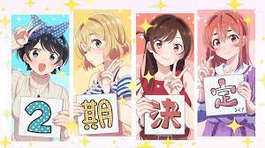

Generos
Accion
Este género se distingue por estar lleno de frecuentes enfrentamientos,
tiroteos, peleas, explosiones, situaciones de mucha adrenalina y muy intensas.
Aventura
En este tipo de animes y mangas se refleja un mundo heroico,
llenos de combate y actos de mucho valor.
Comedia
Este tipo de género está cargado de escenas con toques humorísticos,
donde se puede desprender el subgénero de la parodia y el humor negro.
Ciencia Ficcion
En este tipo de animaciones, como su nombre lo indica, están desarrolladas en un mundo ficticio o
imaginario, en este tipo de género se explotan al máximo los límites de la imaginación..
Romance
Su trama gira en torno a las relaciones entre los personajes de la serie, suelen estar cargados de escenas románticas y con mucho sentimentalismo. Es uno de los géneros del anime más usados.
Terror
El objetivo principal de este tipo de historia es llegar a generar miedo y suspenso,
la característica que más destaca son los efectos y sensaciones que logra causar en su audiencia.